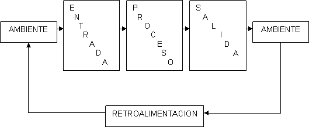

Propósito u objetivo.- Las unidades u elementos, así como las relaciones, definen un distribución que trata de alcanzar un objetivo.
Globalismo.- Todo sistema tiene naturaleza orgánica; cualquier estimulo en cualquier unidad del sistema afectará a todas las demás unidades debido a la relación existente entre ellas.
Entropía.- Tendencia que tienen los sistemas al desgaste o desintegración, es decir, a medida que la entropía aumenta los sistemas se descomponen en estados más simples.
Homeostasis.- Equilibrio dinámico entre las partes del sistema, esto es, la tendencia de los sistemas a adaptarse con el equilibrio de los cambios internos y externos del ambiente.
Equifinalidad.- Se refiere al hecho que un sistema vivo a partir de distintas condiciones iniciales y por distintos caminos llega a un mismo estado final. No importa el proceso que reciba, el resultado es el mismo.

TEORIA GENERAL DE SISTEMAS